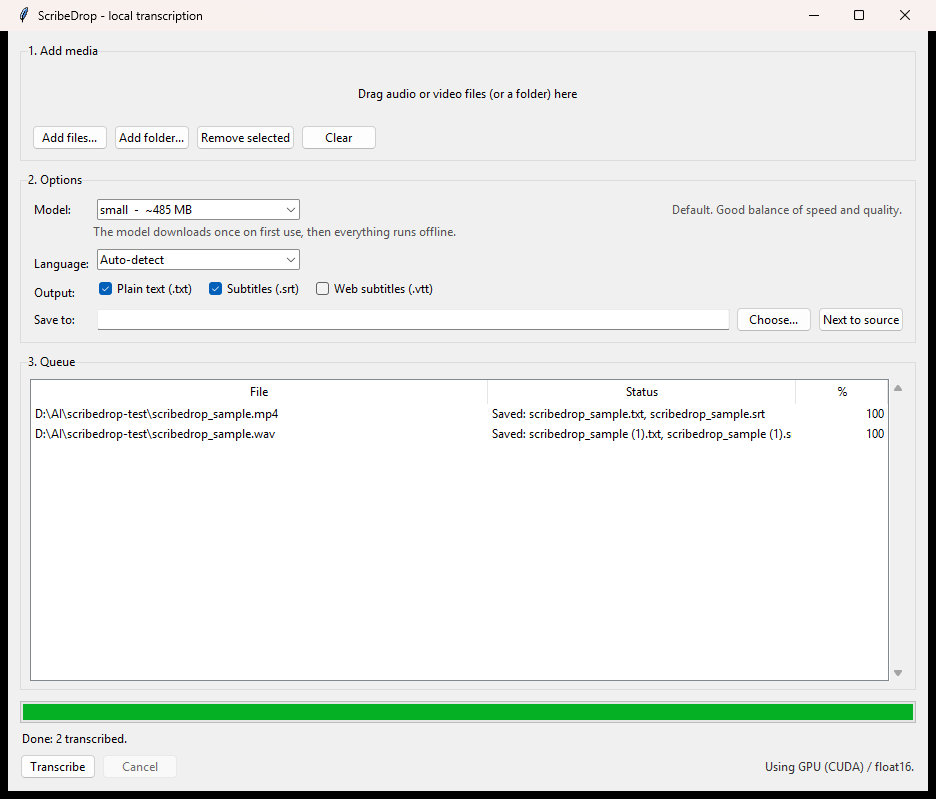

A free Whisper GUI for Windows, for when the command line isn't the point
Drag an audio or video file onto a window. Get a transcript or SRT/VTT subtitles back, computed entirely on your own PC. No upload, no account, no subscription, no command line.
Latest release: ScribeDrop-0.1.0-win64-cpu.zip,
about 100 MB, no install required. Prefer to skip the binary?
Clone the source instead — see
Install below.

MacWhisper for Windows? This is why we built it
If you've searched for a MacWhisper alternative for Windows and come away empty-handed, that gap is the reason ScribeDrop exists. Mac users get one window: drag a file in, get a subtitle file out. Windows users get handed a command line.
The engine almost everyone actually uses — faster-whisper,
a CTranslate2 port of OpenAI's Whisper — is free, open source, and downloaded millions of
times a month. But running it on Windows has usually meant setting up a Python environment,
hunting down CUDA libraries, and typing --model large-v3 --output_format srt
at a prompt.
So people either pay a cloud service per minute of audio, or pay for a closed-source Windows clone of a Mac app, for something their own computer can already do for nothing. ScribeDrop is the missing front end: the same engine, wrapped in a window — a free Whisper GUI for Windows that turns "transcribe this" into a drag and a click.
What it does
- Drag and drop files or whole folders onto the window — or use Add files…, or drop files onto the launcher itself.
- A real queue, with per-file progress, an overall progress bar, and a Cancel button that actually stops mid-file instead of finishing anyway.
- A model picker — tiny, base, small, medium, or large-v3 — with the
download size for each shown up front. Defaults to
small, a much smaller download thanlarge-v3and good enough for most speech. - 28 languages, or auto-detect: English, Spanish, French, German, Italian, Portuguese, Dutch, Polish, Russian, Ukrainian, Turkish, Arabic, Hebrew, Hindi, Chinese, Japanese, Korean, Swedish, Norwegian, Danish, Finnish, Czech, Greek, Romanian, Hungarian, Indonesian, Vietnamese, and Thai.
- Three output formats —
.txt,.srt,.vtt— in any combination, written next to the source file or into a folder you choose. - GPU when you have one, CPU when you don't — the status line always
says which, e.g.
Using GPU (CUDA) / float16orUsing CPU / int8. It never silently falls back to the slow path without telling you. - Nothing gets overwritten. Run it twice on the same file and the second
pass writes
interview (1).srt, not over your first result.
Generate SRT subtitles locally
If subtitles are what you came for: tick Subtitles (.srt), drop the video
in, press Transcribe. You get a standards-shaped .srt file next to
the video, with sequential indices and monotonic timestamps, ready for YouTube, Premiere,
DaVinci Resolve, VLC, or anything else that reads subtitle files. .vtt
for the web works the same way, and both can be written from a single run — no upload to a
subtitle-as-a-service site required.
Here is a real .srt file ScribeDrop wrote, unedited:
1
00:00:00,000 --> 00:00:02,600
Thanks for trying scribe drop.
2
00:00:02,600 --> 00:00:11,140
Drop a video or audio file onto this window, and it writes a subtitle file next to it, using your own computer to do the work.
3
00:00:11,140 --> 00:00:15,060
No upload, no account, and no subscription required.Which model should I pick?
| Model | What it's for |
|---|---|
| tiny | Fastest, smallest download. Good for a rough draft you'll skim, not trust. |
| base | Still quick, a step up in accuracy. Fine for casual notes. |
| small (default) | The everyday pick — good accuracy for a download most people won't notice. |
| medium | Slower and a bigger download, worth it for accents, background noise, or a talk you'll publish. |
| large-v3 | The most accurate, the slowest, and the biggest download — pick it when the transcript itself is the deliverable and you have a decent GPU. |
Your audio never leaves your machine
This is what offline speech to text on Windows actually means here: transcription runs entirely on your own CPU or GPU. No upload, no account, no server, no telemetry — ScribeDrop has no analytics, no crash reporting, and no update check.
One exception, stated plainly: the first time you use a given model size, ScribeDrop downloads the model weights from Hugging Face. That's a normal file download and it sends no audio, no filenames, and no information about you. After that download, ScribeDrop works with your network cable unplugged, and it does not contact the internet again.
That last sentence is load-bearing, so it's enforced in code rather than hoped for: once a
model is on disk it is opened with local_files_only=True, which
stops huggingface_hub from making its routine "has this changed?"
call on every launch. The verification for the release build used a local HTTP server standing
in for huggingface.co — a cached run sent it zero requests. The code is short enough to check
yourself; start at
scribedrop/engine.py.
Honest limits — read this before you download
This is a trust page, not a hype page, so here is the plain shape of what you're getting with v0.1.0.
Windows only. Built and tested for Windows 10/11, 64-bit. There's no macOS or Linux build.
The .exe isn't code-signed. Windows SmartScreen will show "Windows protected your PC" the first time you run it — click More info → Run anyway. Your antivirus may flag it too, which is a known false positive affecting almost every PyInstaller-packaged Python app. Don't take our word for it: check the SHA-256 checksum against the one published in the release notes, scan the file on VirusTotal, or skip the binary entirely and run from source — that's the whole point of publishing it.
A one-time model download is required on first run. After that, ScribeDrop works fully offline; see above for how that's enforced, not just promised.
This is v0.1.0. It's tested (150 automated tests) but young. Specific known limits in this release:
- No live or microphone recording — files only.
- No speaker diarisation ("who said what").
- No subtitle line-length or characters-per-second shaping; segments come out exactly as Whisper produces them.
- No in-app editor for fixing a transcript.
.srtfiles use LF line endings. Every player we tried accepts them; a few legacy subtitle editors prefer CRLF.- The standalone bundle is CPU-only by design; the GPU path currently requires the from-source install.
It also produces machine transcription, and like all Whisper-based tools it can occasionally generate fluent text that was never spoken, especially on silence, music, or poor audio. Always check the transcript against the audio before relying on it — don't use ScribeDrop as the sole record for medical, legal, financial, safety-critical, or evidentiary purposes.
Install
Two paths. If you have an NVIDIA GPU, Option B transcribes substantially faster — but Option A is the simplest way to try it.
Option A — Standalone (CPU only, no Python)
- Download
ScribeDrop-0.1.0-win64-cpu.zipfrom Releases (about 100 MB). - Unzip it anywhere.
- Run
ScribeDrop.exe.
Measured on the release machine (AMD Ryzen 7 7800X3D, CPU-only
path), a 5-minute audio file with the default small model
took 19.0 seconds. One machine, not a broad benchmark — your results will vary.
Option B — From source (uses your NVIDIA GPU)
Requires Python 3.10+ with Add python.exe to PATH ticked.
- Download
ScribeDrop-0.1.0-source.zipfrom Releases, orgit clonethe repo. - Double-click
setup.bat. It creates a private.venv, installs requirements, detects an NVIDIA GPU, and installs CUDA libraries automatically if one is found (a large one-time download). - Double-click
ScribeDrop.bat.
Measured on the release machine (NVIDIA RTX 4070 Ti, GPU path),
the same 5-minute file with the same small model took
4.5 seconds. Same input, same model, only the device changed.
Everything ScribeDrop creates for itself lives in the project folder or in
%LOCALAPPDATA%\ScribeDrop (settings and downloaded models).
Transcripts go next to your source file by default, or wherever you point the output folder.
System requirements
| Minimum | For the GPU path | |
|---|---|---|
| OS | Windows 10 / 11, 64-bit | same |
| RAM | 4 GB (small model) | 8 GB |
| Disk | ~1 GB for the app + small model | ~2.5 GB (CUDA libraries) |
| GPU | None — CPU works | NVIDIA, driver 525+, 4 GB VRAM for small, 8 GB+ for large-v3 |
| Python | Not needed (Option A) | 3.10+ (Option B) |
Approximate, measured casually rather than benchmarked. FFmpeg is optional — ScribeDrop decodes audio through PyAV, which carries its own FFmpeg libraries, so most files just work. A separately installed FFmpeg is used only as a fallback for unusual containers.
Frequently asked questions
Is it really free?
Yes. ScribeDrop is free and open source under the MIT license. There's no price, no Pro tier live today, no waitlist, and no email capture — this page is the whole product. A paid Pro tier with features like watch-folders is planned for the future, but everything in the current release stays free.
Does anything get uploaded?
No. Transcription runs entirely on your own CPU or GPU. The only network activity is a one-time model download from Hugging Face the first time you use a given model size — that download carries no audio, filenames, or information about you. After that, ScribeDrop works with your network cable unplugged.
Do I need a GPU?
No. ScribeDrop runs on CPU out of the box using the standalone download, and the status line always tells you whether it's using CPU or GPU. If you have an NVIDIA GPU (driver 525+, 4 GB VRAM for the small model), the from-source install path uses it and transcribes substantially faster.
Why does Windows warn me?
Because the .exe isn't code-signed — a signing certificate costs a few hundred dollars a year, and this is a free project. Windows SmartScreen will show "Windows protected your PC" the first time you run it; click More info, then Run anyway. Your antivirus may also flag it, which is a known false positive common to PyInstaller-packaged Python apps. You don't have to take our word for it: check the SHA-256 checksum in the release notes, scan the file on VirusTotal, or skip the binary and run from source.
What file types does it support?
Audio: mp3, wav, m4a, aac, flac, ogg, oga, opus, wma, aiff. Video: mp4, mkv, mov, avi, webm, m4v, wmv, flv, mpg, mpeg, ts — the audio track is used. Output is .txt, .srt, and/or .vtt, in any combination.
What languages does it support?
Auto-detect, or pick one of 28 languages explicitly: English, Spanish, French, German, Italian, Portuguese, Dutch, Polish, Russian, Ukrainian, Turkish, Arabic, Hebrew, Hindi, Chinese, Japanese, Korean, Swedish, Norwegian, Danish, Finnish, Czech, Greek, Romanian, Hungarian, Indonesian, Vietnamese, and Thai.